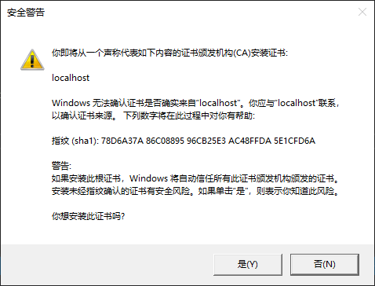

（一）AspNetCore集成gRPC体验
gRPC最早是由Google开发，是一款现代、开源、高性能的RPC框架。默认gRPC使用Protocol Buffer作为服务的接口定义语言（Interface Definition Language, IDL）和信息交换格式，支持多种语言，支持客户端、服务器以及双向流式调用处理[1]。
下面我们一起来看下如何基于AspNetCore来创建一个gRPC服务端（基于Windows10机器）。
¶环境准备
- Visual Studio 2019 16.4及以上版本 （当然也可以使用Visual Studio Code来开发）
- dotNetCore SDK 3.1及以上版本
博主使用的环境说明：
- Visual Studio 2019 Professional具体版本为：Version 16.5.5
- 安装的dotnet sdk版本信息如下：
1
2
3
4
5C:\Users\admin>dotnet --list-sdks
2.1.505 [C:\Program Files\dotnet\sdk]
2.2.110 [C:\Program Files\dotnet\sdk]
2.2.207 [C:\Program Files\dotnet\sdk]
3.1.202 [C:\Program Files\dotnet\sdk]
¶通过项目模板创建gRPC服务端
-
使用Visual Studio的gRPC模板快速创建包含默认实现的gRPC服务
通过输入grpc关键字选择项目模板
-
设置项目名称和文件存放路径
-
不需要设置Authentication，不需启用Docker Support，直接下一步
-
这样一个AspNetCore gRPC项目就创建好了，模板默认实现了一个GreetService，包含一个SayHello方法
¶熟悉模板项目中的文件及配置
-
第一眼看上去，发现Protos文件夹下面有一个greet.proto文件，*.proto扩展名的文件为ProtoBuf的定义文件，我们来看下这个文件的内容：
1
2
3
4
5
6
7
8
9
10
11
12
13
14
15
16
17
18
19
20
21syntax = "proto3"; // 指定使用的protobuf版本，如果不指定，默认使用proto2。如果指定，则必须在文件的非空非注释的第一行。
option csharp_namespace = "MyGrpcService"; // 指定C#的命名空间
package greet; // 定义包名称，该行是可选的,可以为.proto文件新增一个可选的package声明符，用来防止不同的消息类型有命名冲突
// 服务定义
service Greeter {
// 方法定义
rpc SayHello (HelloRequest) returns (HelloReply);
}
// 请求消息模型
message HelloRequest {
string name = 1;
}
// 响应消息模型
message HelloReply {
string message = 1;
}根据以上ProtoBuf的定义，ProtoBuf编译器
protoc会自动在MyGrpcService命名空间下生成名为Greeter的gRPC服务契约抽像代理类，文件存放位置\MyGrpcService\obj\Debug\netcoreapp3.1\GreetGrpc.cs。 -
另外appsettings.json里最后有如下一个针对Kestrel服务器的配置，可以看到gRPC服务默认是使用HTTP/2来通信的。
1
2
3
4
5"Kestrel": {
"EndpointDefaults": {
"Protocols": "Http2"
}
}-
Kestrel服务端点可以通过配置来支持HTTP1.1、HTTP2或者同时支持二者。当服务端点支持多种协议的话，TLS(Transport Layer Security)应用程序层协议协商(Application-Layer Protocol Negotiation, ALPN) 握手可用于协商客户端与服务器之间的连接协议，此协商确定连接是使用HTTP/1.1还是HTTP/2。
-
如果在不使用TLS的情况下配置了HTTP/2服务端点，则必须将服务端点的ListenOptions.Protocols设置为
HttpProtocols.Http2。因为没有TLS，如果使用具有多个协议（例如HttpProtocols.Http1AndHttp2）的服务端点，则没有办法协商。到不安全服务端点的所有连接均默认为HTTP/1.1，且gRPC调用会失败。[2]
后面我们可以专门写下“不使用TLS的情况下配置了HTTP/2服务端点”的场景，以及代码实现。
-
¶如何实现gRPC服务
- 上面我们提到ProtoBuf编译器会根据proto文件自动生成gRPC服务契约抽象代理类，那如果要提供真正的gRPC服务，我们需要实现具体的服务契约方法。现在我们来打开Services\MyGrpcService.cs文件。
1
2
3
4
5
6
7
8
9
10
11
12
13
14
15
16
17
18
19
20namespace MyGrpcService
{
public class GreeterService : Greeter.GreeterBase // Greeter.GreeterBase即为上面所谓的gRPC服务契约抽象代理类
{
private readonly ILogger<GreeterService> _logger;
public GreeterService(ILogger<GreeterService> logger)
{
_logger = logger;
}
// 通过override来实现SayHello服务方法
public override Task<HelloReply> SayHello(HelloRequest request, ServerCallContext context)
{
return Task.FromResult(new HelloReply
{
Message = "Hello " + request.Name
});
}
}
} - 仅有上面的gRPC服务实现是不够的的，我们还需要将它映射到服务器端点路由里。对的，Startup.cs文件中下面的一行代码正是为了实现这样的效果。
1
2
3
4
5
6
7
8
9
10
11public void Configure(IApplicationBuilder app, IWebHostEnvironment env)
{
// ...
app.UseRouting();
app.UseEndpoints(endpoints =>
{
endpoints.MapGrpcService<GreeterService>(); // <---- 说的是这一行代码
// ...
});
} - 既然打开了Startup.cs文件，那顺便再抬头往上看几行，发现在ConfigureServices方法中有一行代码
services.AddGrpc();，没错，这一行代码表示需要启动的是gRPC服务。
¶运行gRPC服务
说了那么多，现在我们把这个模板项目跑起来，看看神秘的gRPC服务运行起来到底是啥样的。
-
在Visual Studio开发环境中，启动项目最直接的就是按下F5（当然也可以通过命令行dotnet run来启动）。通过Visual Stuido第一运行gRPC服务的时候，会弹出一个是否信任AspNetCore SSL证书的确认框，点击[Yes]即可，下一步点击[是]安装证书。

 -
现在gRPC服务就可以跑起来了，你会看到如下的命令行输出，通过打出来的日志
https://localhost:5001，https表明启动的是受TLS保护的服务端点。[3]
¶结语
到这里我们就把一个基于AspNetCore的gRPC模板项目分析的差不多了，后续我们将继续探索如何实现一个客户端来访问这个SayHello的gPRC服务。
¶源码
Demo代码已经上传 https://github.com/jeremyLJ/aspnetcore-grpc-demo